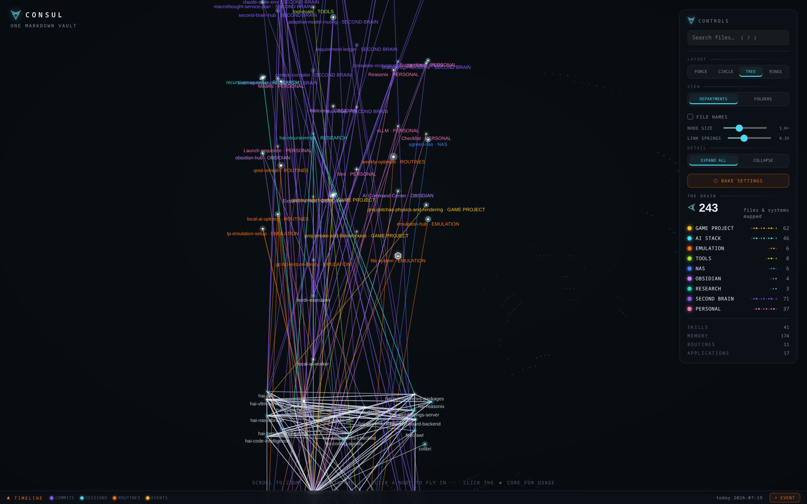

the tree layout
Knowledge grows.
Switch the map to TREE and each department grows upward from a shared root — a game project, an AI stack, a teaching archive — each one a distinct organism you can watch change week to week.

TREE layout, live capture. Left to right: a game in development · the AI stack · emulation · tools · NAS · editor · personal — rooted in one markdown vault.

FORCE layout. The same vault as living galaxies — every department a cluster orbiting the core, dragged and re-settled in real time.

Tree focus, in 3D. Click a department to isolate it and orbit — every note it links to across the vault arcs overhead as a labelled crown.